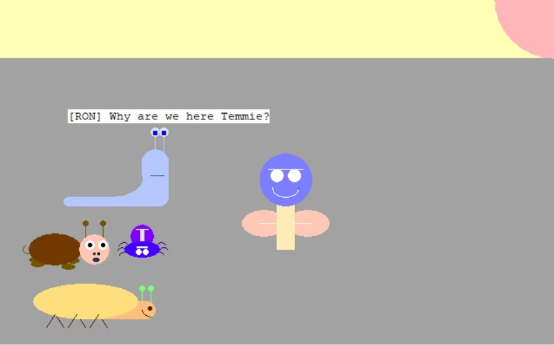
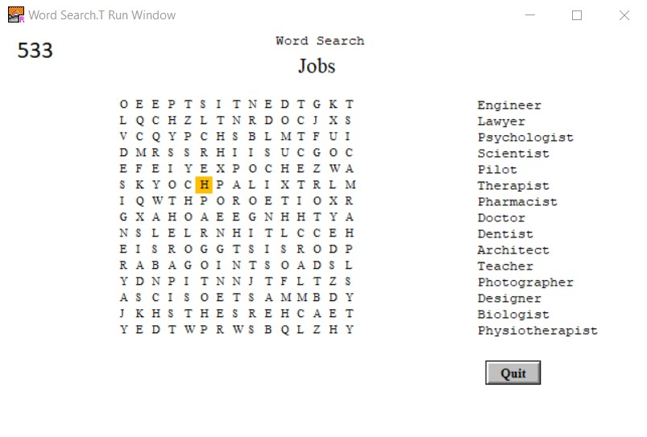
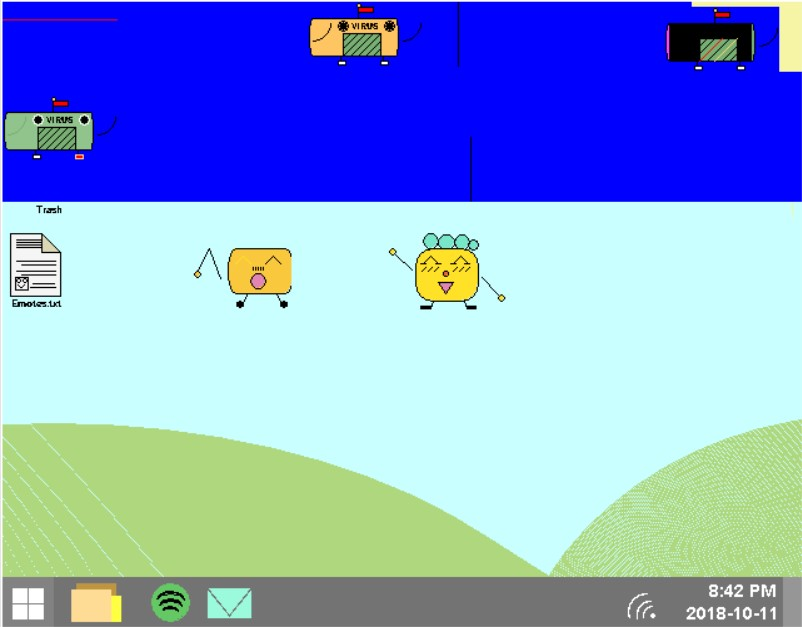
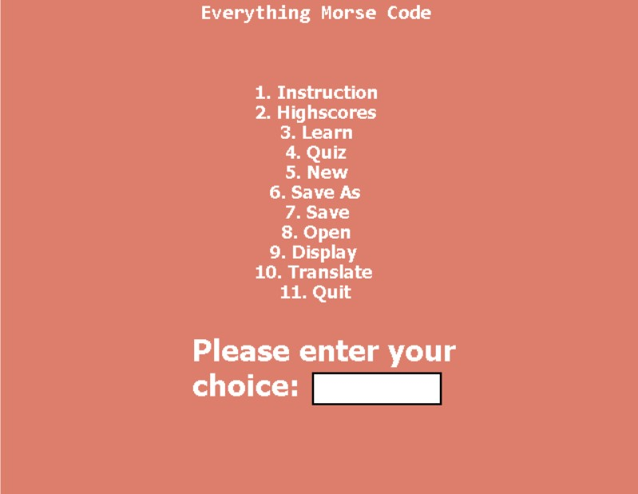
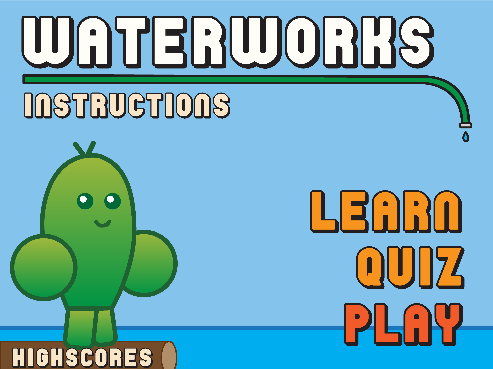
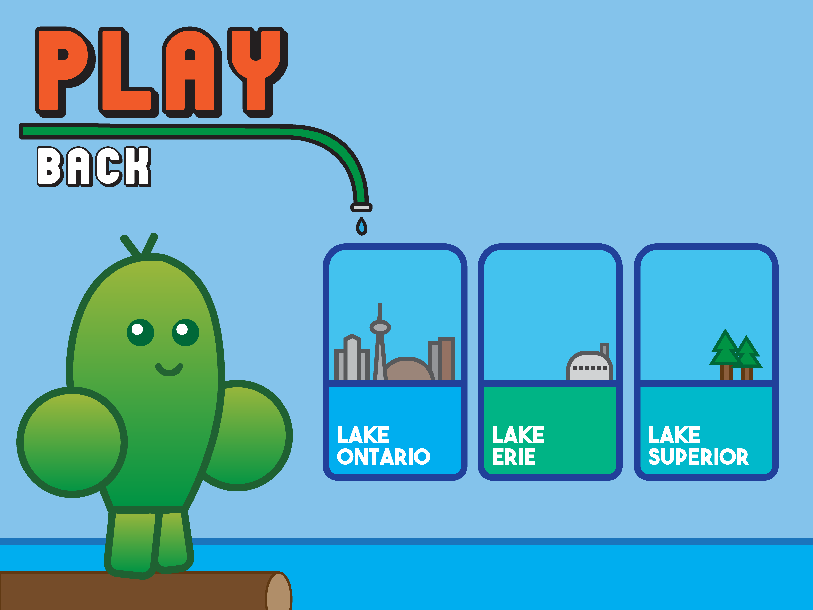

Turing Animated Story

A heart-wrenching animated story made in the Turing programming language that somehow manages to bring together friendship, trust, and eventualy betrayal in the most beautiful and miserable way. (requires Turing 4.1.1)
Download: TuringAnimation.t
Turing Word Search Game

A word search game made unlike any word search game you've ever seen before. Combining both timed and untimed modes, it's undoubtedly feature-packed. Not to mention the oh-so-satisfying clicking sound played after every mouse press. (requires Turing 4.1.1)
Download: WordSearch.zip
Java Animation

A short story visualizing the terror of computer viruses taking over a sweet little computer, leaving nothing but death and destruction, ultimately cuasing the horrific blue screen of death. (requires HSA Ready to Program Java IDE)
Download: JavaAnimation.zip
Java "Everything Morse Code" Program

A complete Java program filled to the brim with features allowing you to, as the name suggests, do *almost* everything that you may need to do with morse code. This includes learning, testing, writing, translating, saving, and reading morse code. (requires HSA Ready to Program Java IDE)
Download: EverythingMorseCode.zip
Future Projects:
Waterworks: A Pistachio Labs Production


The object of the game is to get to the other side of a lake to turn off a water-inefficient device depleting the water in the lake before the lake goes completely dry (timer). The user will have to use the arrow keys to jump across logs to cross the lake. On the logs, there will be water-efficient and water-inefficient objects. The water efficient objects will increase the amount of water in the lake, and the water inefficient objects will deplete it. On the first level, the user will cross Lake Ontario to turn off a sink. On the second level, the user will cross Lake Erie to turn off a garden hose. On the third level, the user will cross Lake Superior to turn off a washing machine.